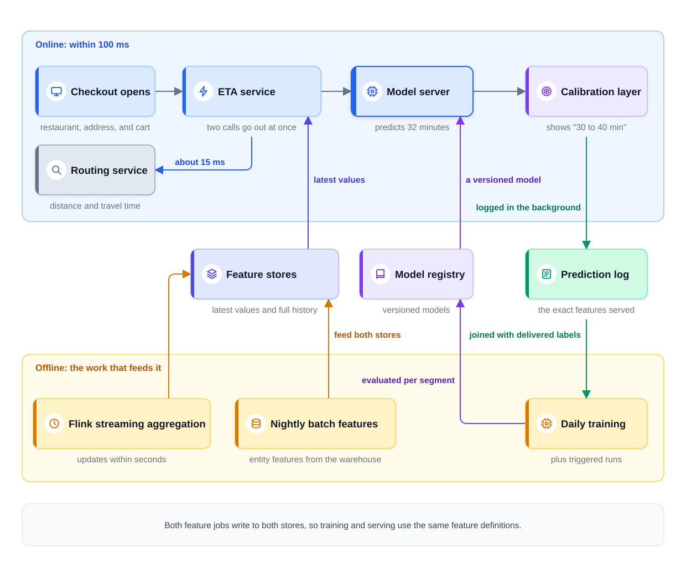
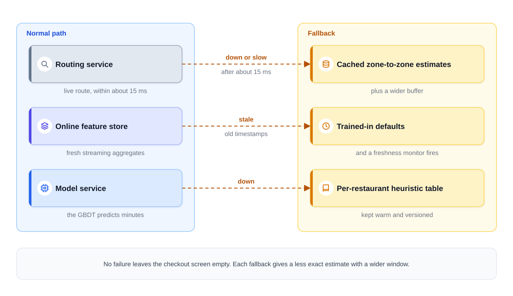
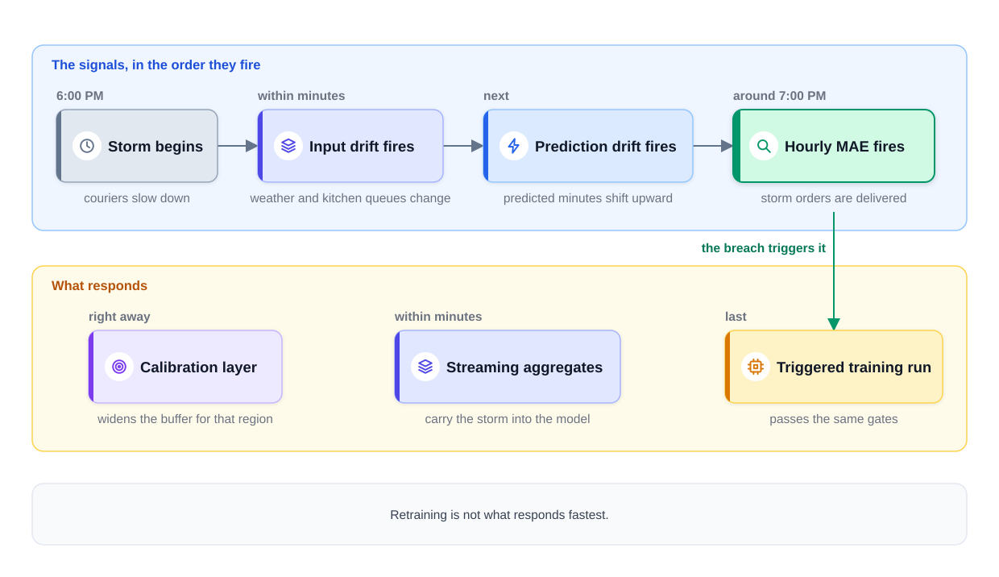

0% completed
Capstone: An ML Platform for ETA Prediction
On This Page
Know the Vocabulary
The Exercise
Part 1: Frame the Problem
Part 2: Define Success
Part 3: Map the Data
The Label
Three Feature Buckets
How the Feature Stores Are Fed
Log Exactly What Serving Saw
Part 4: Pick the Model
The Baseline
The Upgrade: A GBDT on CPUs
The Calibration Layer
Part 5: Design the Serving Path
Why This Is Online Inference
One Request, Step by Step
When a Dependency Fails
Part 6: Keep It Working
Four Monitoring Layers
Segment Everything
Retraining: Daily, Plus a Trigger
The Promotion Gates
A Storm, Signal by Signal
Part 7: Count the Costs
Part 8: What Each Level Sounds Like
Part 9: Follow-Ups to Practice
FAQs
Key Takeaways
Check Your Understanding
Know the Vocabulary
This lesson uses the terms below many times. Read them once now, and come back here when a later section needs one.
- ETA: Short for estimated time of arrival. Here it is the delivery time the app shows at checkout, such as "30 to 40 min" on the screen.
- MAE (mean absolute error): The average size of the miss, in minutes. A prediction of 32 minutes for a delivery that took 38 minutes misses by 6.
- p90 error: The miss that 90 percent of predictions stay under. It marks where the worst tenth of the estimates begins.
- On-time rate: The percent of orders delivered within the window the customer was shown.
- Baseline: The simplest approach that could work. Every new model must beat it.
- GBDT (gradient-boosted decision trees): A model built from many small decision trees. Each new tree corrects the mistakes of the trees before it.
- Feature: One input value the model uses, such as the distance to the customer.
- Streaming aggregate: A feature computed over a short recent window and updated within seconds, such as the orders a restaurant received in the last 30 minutes.
- Feature store: A system that keeps feature values. Its offline store keeps the full history for training. Its online store keeps the latest values for fast lookups.
- Training-serving skew: A difference between the features a model saw in training and the features it sees in serving.
- Calibration layer: A small step after the model that turns the predicted minutes into the window the customer sees.
- Fallback: The answer the system gives when one of its parts is slow or down.
- Drift: A change in the incoming data, or in how that data relates to the outcome. Drift can make a model less accurate.
- Segment: A slice of traffic the business treats as its own unit, such as one city, one restaurant type, or one kind of weather.
The Exercise
Read the question below, then stop and answer it yourself before you read on.
"We are a food-delivery company with about 500,000 orders a day. When a customer opens checkout, the app shows how long the delivery will take. Design the system behind that estimate. It must stay accurate as we grow into new cities."
Give yourself about 40 minutes, and say your answer out loud. Use the seven steps of Module 1's framework. The steps are: frame the problem, define success, map the data, pick the model, design the serving path, keep it working, and count the costs.
Then compare your answer with the reference answer below. It draws on most lessons in this module, and it links each lesson where its idea appears. All numbers are illustrative assumptions, not figures from a real company.
Part 1: Frame the Problem
Step 1 names the system and its scope. Say what kind of system this is before you draw anything.
This is a predictive system, and its output is one number: the minutes until the food arrives. Predicting a number, rather than a category, is called regression.
The core ask is a checkout ETA that stays accurate as the business grows, and both halves of that sentence matter.
- "At checkout" sets a strict time limit, because the customer is waiting for the screen.
- "As the business grows" means new cities, new restaurants, and changing traffic. So the design needs a feedback loop from the first day.
Then state the scope out loud.
- In scope: the estimate shown when checkout opens, in every city the company serves.
- Out of scope for now: live updates after the order is placed, courier assignment, and estimates on other screens.
Confirm it with one question: "Does that scope match what you want to discuss?"
Notice the word "platform" in the title. The feature store, the model registry, and the monitoring built here can later serve other models, such as fraud scoring. You do not design those models now, but you build the shared parts so that they could join later.
Part 2: Define Success
Step 2 turns "accurate" into numbers. This design uses three quality numbers and one latency target.
1) MAE is the primary metric. MAE is the average size of the miss. If the model predicts 32 minutes and the order takes 38, the miss is 6 minutes. MAE counts a miss of 6 minutes too early the same as a miss of 6 minutes too late. For example, the team might aim for an MAE under 5 minutes. That is an example target, not a guarantee.
2) MAE at p90 shows the bad tail. The tail is the small share of orders with the largest misses. An average can look tight while some customers wait far longer than promised. So the design also reports the p90 error, often written as MAE at p90. Sort every miss from smallest to largest. The p90 error is the miss that 90 percent of predictions stay under. Suppose the MAE is 4 minutes, but the p90 error is 20 minutes. Then one order in ten misses by more than 20 minutes, and the average hides it.
3) The on-time rate checks the promise. The customer never sees the model's raw number. The customer sees a window, such as "30 to 40 min." The on-time rate is the percent of orders delivered within that window. It is a product-honesty metric, because it measures whether the company kept its word. MAE measures the model, while the on-time rate measures the promise.
Offline Evaluation: Choosing the Metric explains why a regression model needs both an average and a view of the tail.
4) Latency. The estimate must appear within 100 milliseconds (ms) at p99. A p99 of 100 ms means that 99 percent of requests finish within 100 ms, and this too is an example target.
Scale. Assume 500,000 orders a day, and note that many customers open checkout more than once. Some also leave without ordering, so assume about 1.5 million estimates a day. That is about 17 requests per second on average, and perhaps 70 at the dinner peak. The ETA service is stateless, meaning it keeps no data between requests. For a stateless service, this is a small load.
Two numbers pull against each other in this design. A wider window raises the on-time rate, but a longer promise can make some customers leave checkout. Part 4 shows who sets that trade-off.
Part 3: Map the Data
Step 3 asks where the labels and the features come from.
The Label
The label is the real delivery time. It is the number of minutes from the moment the customer places the order to the moment the courier marks it delivered. It arrives on its own, about an hour after the prediction, and no person needs to review it. Where Training Data Comes From covers labels like this one.
These labels still need cleaning before training.
- Drop canceled orders, because they never finish.
- Drop scheduled orders that the customer placed for a later time.
- Watch for couriers who mark orders delivered too early, because their labels are too short.
Three Feature Buckets
Features and Feature Stores sorts features into four kinds by what they describe. For this design, it is enough to sort them by how fresh they must be. That gives three buckets, and each bucket has its own pipeline.
| Bucket | Examples | How fresh | Computed by |
|---|---|---|---|
| Entity features | The restaurant's average prep time, its cuisine type, the customer's building type | Hours old is fine | The nightly batch job |
| Streaming aggregates | Orders in the kitchen now, orders in the last 30 minutes, couriers free in the zone | Seconds to a minute old | The streaming job |
| Request-time context | Route distance and travel time, cart size, time of day, weather | Computed now | The ETA service, at request time |
Entity features describe things that change slowly, and streaming aggregates describe the last few minutes. Request-time context exists only when this checkout opens.
How the Feature Stores Are Fed
Order events flow into an event stream, such as Kafka. An event stream is a log of events that many jobs can read, and two jobs read from this one.
- Flink streaming aggregation. Flink is a stream processor, a system that computes results as events arrive. It updates the streaming aggregates within seconds.
- Nightly batch features. A scheduled job reads the data warehouse each night and computes the entity features. The data warehouse is the store that keeps the company's full history of orders.
Both jobs feed both feature stores. The online store keeps only the latest value for each restaurant and zone, for fast reads. The offline store keeps every value with its timestamp, for training. Features and Feature Stores explains this two-path design.
Log Exactly What Serving Saw
The ETA service writes one log row for every prediction. The row holds a prediction ID, the exact feature values used, the model version, the predicted minutes, and the window shown. When the order is delivered, a job joins that row with its label.
This log is the most direct cure for training-serving skew. Training then uses exactly the values that serving saw. It does not use values recomputed later, which could differ because of a delay, a bug, or a default. So the model learns from the same inputs it will really get, as Training vs Serving explains.
A new feature under test was never logged. For it, the offline store gives point-in-time values. Point-in-time means each training row uses only values that existed at the moment of the prediction.
The prediction ID also makes the log safe to retry. If a log write is repeated, both copies carry the same ID. So the join can keep exactly one row for each prediction.
Part 4: Pick the Model
Step 4 starts with the simplest model that works.
The Baseline
The baseline is a per-restaurant average plus a distance term. For example, take the restaurant's average prep time. Then add the route distance divided by the city's average courier speed. It needs no training job, and a scheduled query can rebuild it each night.
The baseline gives the team three things.
-
A number to beat. Suppose the baseline has an MAE of 7 minutes. A model with an MAE of 6.8 minutes is probably not worth its extra pipelines.
-
A fallback. When the model service is down, the baseline still answers, as Part 5 shows.
-
A first-day answer. A new city has no order history, but the baseline can still run on distance and a few starting values.
The Upgrade: A GBDT on CPUs
The upgrade is a GBDT trained on all three feature buckets. It can learn patterns the baseline cannot see. For example, a kitchen may slow down sharply after 15 open orders, but only when it rains.
The data here is tabular, meaning it is stored as rows and columns. Each row is one order, and each column is one feature. Tree models like a GBDT are a strong and common choice for this kind of data. A GBDT with a few hundred trees often scores one row in under a millisecond on an ordinary CPU. Measure it, but expect a few CPU servers to be enough.
So serving on CPUs is not a timid choice. It is the right size for the problem. A fleet of graphics processors (GPUs) would add cost and gain little here. Model Serving Basics makes the same point for small models.
The Calibration Layer
The model predicts minutes, but the customer sees a promise. Something must turn one into the other.
The calibration layer is a small step after the model. It takes the predicted 32 minutes and adds a buffer. Then it shows a window such as "30 to 40 min" on the screen. The buffer can depend on the city, the hour, and how uncertain the inputs are.
The layer stays outside the model on purpose. The buffer is a product knob, not model logic.
- A wider window raises the on-time rate, but a longer promise can make some customers leave checkout. That trade-off is a business decision, so the product team owns it.
- The product team can change the buffer in minutes, with no retraining.
- The model keeps one clean job: predicting the real delivery time as closely as it can.
Part 5: Design the Serving Path
Step 5 traces one request through the system.
Why This Is Online Inference
Batch vs Online Inference gives one deciding question. Does the prediction need information that exists only at request time? Here the answer is yes, because the estimate needs the live kitchen queue and the live route to this customer. Neither is known until checkout opens, so the model must run online while the customer waits.
One Request, Step by Step
Step 1: Checkout opens. The app sends the restaurant, the delivery address, and the cart to the ETA service.
Step 2: Two calls go out at once. The service reads the stored features from the online feature store in one batched read. At the same time, it asks the routing service for the distance and travel time. Running both calls together saves time.
Step 3: The model predicts. The model server runs the GBDT and returns 32 minutes.
Step 4: The calibration layer shapes the promise. It turns 32 minutes into "30 to 40 min."
Step 5: The answer returns, and the log is written. The service returns the window to the app. It writes the log row in the background, so logging adds no wait.
The table shows an example latency budget, with illustrative numbers rather than measured ones.
| Stage | Example budget |
|---|---|
| Request routing and checks | 5 ms |
| Online feature store read | 10 ms, at the same time as the routing call |
| Routing service call | Up to 15 ms, at the same time as the feature read |
| Model (GBDT on a CPU) | 5 ms |
| Calibration layer | 1 ms |
| Network and response | 10 ms |
| Prediction log | In the background |
The overall target is under 100 ms, and the routing call gets a slice of about 15 ms. That slice is a limit, not the usual time. A healthy routing call finishes well inside it. Even a request that uses every slice in full finishes in about 36 ms. The rest of the budget leaves room for slow moments, which the p99 target must cover.
The diagram below shows the whole platform, with the online path you just traced in the top band. The lower band is the offline work that feeds it.

Notice that the feature stores sit between the two bands. Both feature jobs write to both stores, so training and serving use the same feature definitions.
When a Dependency Fails
Each dependency on the serving path needs a timeout and a fallback. A timeout is the longest the service will wait for an answer. This is classic reliability engineering, and it decides what the customer sees when a part fails.
The routing service is down or slow. After its slice of about 15 ms, the service stops waiting. It uses cached zone-to-zone estimates instead. A zone-to-zone estimate is the usual travel time between two areas of the city, refreshed often. It is less exact than a live route, so the calibration layer applies a wider buffer.
The feature store is stale. Suppose the streaming job falls behind, and the kitchen queue values are 20 minutes old. The service sees the old timestamps and replaces those values with trained-in defaults. A trained-in default is a "missing" value the model already saw during training. This works only if the training data includes such rows. So the team keeps some training rows with these values marked missing, and the model learns what to do without them. At the same time, a freshness monitor fires, so a person investigates.
The model service is down. The ETA service switches to a per-restaurant heuristic table. A heuristic is a simple hand-made rule, not a trained model. This table holds the baseline from Part 4, with each restaurant's average computed ahead of time. The service adds the distance term from the route. It is kept warm, meaning it is loaded in memory and ready to answer. It is also versioned, so the team knows which numbers served each order. If only a newly released model version misbehaves, the first step is to roll back to the previous version in the registry. The table is for the case when no model can answer.
The diagram below shows the three fallbacks next to the normal path.

Notice that no failure leaves the checkout screen empty. Each fallback gives a less exact estimate with a wider window. Model Serving Basics explains how to choose fallbacks like these.
Part 6: Keep It Working
Step 6 is where "stays accurate as the business grows" gets designed.
Four Monitoring Layers
Monitoring, Drift, and Retraining describes four layers of monitoring. Each layer gives its signal at a different time.
| Layer | What it watches here | When it can fire |
|---|---|---|
| 1. Pipeline freshness (system health) | The age of streaming and batch features, failed jobs, latency, and errors | Within seconds |
| 2. Inputs | Feature values compared with training, such as kitchen queue sizes | Within minutes |
| 3. Predictions | The spread of predicted minutes | Within minutes |
| 4. True error (outcome quality) | MAE, the p90 error, and the on-time rate, from delivered orders | About an hour later |
The fourth layer is the real measure of quality, but it must wait for labels that arrive about an hour later. The first three layers warn earlier.
Segment Everything
Do not trust one global MAE, because ETA models often get worse one region at a time. A road closure in one city, a new kind of restaurant, or a heat wave in one area can push local errors up. A global average can hide a serious local problem.
So every quality number is reported per segment: by city, by restaurant type, and by weather. An alert fires when any large segment gets worse, even if the global number looks fine.
Retraining: Daily, Plus a Trigger
How often a model retrains is its retraining cadence. Here the model retrains daily, since labels arrive within an hour and each day brings a full set of fresh examples. A GBDT on this data trains quickly, so daily runs are cheap. Daily is an example cadence, so measure how fast the error grows between runs and adjust it.
A trigger adds an extra run outside that cadence. The trigger is an hourly MAE breach, which means the MAE for the last hour rises above a set limit. Check the data pipelines before the extra run, because retraining will not fix a stale feature.
The Promotion Gates
Every candidate model passes the same gates before it serves, whether it came from the daily run or a triggered one.
-
Offline evaluation, per segment. Compare the candidate with the current model on recent orders it never saw in training. Check every large segment, not just the average.
-
Shadow mode. The candidate scores live requests next to the current model, but nobody sees its results.
-
Canary release. A small share of traffic gets the candidate, and then more.
-
An A/B test for larger model changes. An A/B test splits users into two groups, gives each group a different model, and compares the results. Here it compares the on-time rate and the share of checkouts that become orders.
A candidate that passes the offline check is saved in the model registry as a versioned model. The model server loads its model from there.
The per-segment check catches a common trap. Suppose a candidate lowers the global MAE from 5.0 to 4.7 minutes. But in Manhattan during the dinner rush, its MAE rises from 6 to 9 minutes. The candidate looks better on average, yet thousands of Manhattan customers would get worse estimates. A model can win on average while losing one segment, so the gate blocks it.
Online Experiments and A/B Testing explains the online part of these gates.
A Storm, Signal by Signal
Here is how the monitors behave on a bad evening. A storm doubles delivery times across one region. The steps below follow the signals in the order they fire.
Step 1: The storm begins at 6:00 PM. Rain starts, couriers slow down, and fewer couriers accept orders.
Step 2: Input drift fires first. Within minutes, the weather feature changes and kitchen queues grow. Fewer couriers are free in each zone. These inputs move far from their usual values, so the input monitor fires.
Step 3: Prediction drift fires next. The model sees the longer queues and the missing couriers, so its predictions rise. The spread of predicted minutes shifts upward, and the prediction monitor fires.
Step 4: The hourly MAE fires last. The first storm orders are delivered around 7:00 PM, and many arrive later than predicted. The hourly MAE for the region breaches its limit, and that breach triggers an extra training run.
The diagram below shows this timeline.

Notice that retraining is not what responds fastest. The streaming aggregates carry the storm into the model within minutes, so the current model starts predicting longer times on its own. The calibration layer can also widen the buffer for that region right away. The triggered training run comes last, and its candidate still passes the same gates.
This order matters for a short event. A storm that ends in a few hours may be over before the new model ships. So during a storm, the streaming features and the wider buffer do most of the work. A triggered run helps most when the change will last, such as new traffic patterns after a long road closure.
Part 7: Count the Costs
Step 7 asks where the money goes. For this system, the answer surprises many candidates.
Serving the model is trivial, because a few CPU servers running the GBDT can handle 70 requests per second with capacity left over. The real cost sits elsewhere.
| Cost line | Why it costs money |
|---|---|
| Streaming pipeline | The event stream and the streaming job run all day, every day |
| Feature stores | The online store keeps fresh data in memory, and the offline store keeps the full history |
| Batch and training jobs | Nightly features, daily training, and evaluation runs |
| Routing calls | One call for each estimate, possibly to a paid outside service |
| Model serving | A few CPU servers, the smallest line |
Routing calls are easy to forget, so assume each call costs
This is the cost pattern of a classic predictive system. The model is cheap, and the pipelines and calls around it cost more. In systems built on large language models, the model call itself is often the largest cost. Inference Economics works through that case.
Part 8: What Each Level Sounds Like
Interviewers judge more than whether the boxes are right. Here is how the same design sounds at three levels.
Mid-level. "I'd train a GBDT on past deliveries, with features like distance, prep time, and time of day. I'd serve it behind an API in under 100 ms, retrain it regularly, and measure MAE."
This answer is correct but thin, because it has no fallbacks, no segments, and no plan for new cities.
Senior. A senior answer covers the full architecture and names the three feature buckets and the two feature stores. It logs the features served, gives each dependency a fallback, and monitors four layers by segment. It promotes models through per-segment gates, shadow mode, and a canary release.
Staff. A staff answer does all of that, and adds two ideas.
- It separates the model from the promise. "The model predicts minutes. The window we show is a product decision, set in a calibration layer the product team owns. MAE measures the model, and the on-time rate measures the promise."
- It names the cost regime. "Inference is the cheap part. The streaming pipeline and the routing calls cost the most, so I'd look for savings there first."
A staff answer may also note that the feature store and the registry can serve the next model, such as fraud scoring. Notice that the staff answer adds almost no new boxes. It adds judgment about who owns each decision and where the cost really sits.
Part 9: Follow-Ups to Practice
Answer each question out loud before you read the answer below it.
1. "Checkout p99 creeps past 100 ms, and profiling blames the feature reads. What do you do?"
Use four levers, starting with batching the reads, so one call fetches all features instead of many small calls. Second, cache the busiest entities, such as popular restaurants, in the service's own memory. Third, give slow reads a timeout, and use trained-in defaults when they miss it. Fourth, trim features that add little accuracy, since each one costs a read.
2. "Product wants ETAs on the restaurant list page, at 100 times the checkout traffic. Does the design survive unchanged?"
No. The list page would need about 150 million estimates a day. A routing call for each one would multiply the routing bill by 100, to about $150,000 a day at the example price. Instead, precompute estimates in batch every few minutes, one for each restaurant and each nearby delivery zone. The list page only looks them up. Checkout keeps the online path, because that is where the exact address is known and the promise is made.
3. "A new city launches with zero order history. What serves the estimate on the first day?"
The baseline does, because its distance term needs only the route and works anywhere. For prep times and courier speeds, borrow priors from the most similar existing city. A prior is a starting value used until local data exists. As local orders complete, real restaurant averages replace the priors. Once the city has a few weeks of history, the GBDT takes over through the usual gates.
4. "Use the same platform to predict which customers will churn."
Churn means a customer stops ordering, for example for 30 days in a row. Then one fact reshapes the design: "churned" is only knowable about 30 days after the fact. So the true-error layer of monitoring lags by a month. Input drift and prediction drift become the main early warnings. Retraining runs less often, because the newest usable labels are always a month old. And since nothing needs request-time data, batch inference fits.
5. "Now design price estimates for a ride-hailing app."
The seven steps stay the same, but freshness matters far more. Prices depend on live supply and demand, which can change within seconds. In the ETA design, a kitchen count that is a minute old does little harm. For prices, a count of free drivers that is a minute old can already be wrong. So the streaming features must update at seconds granularity, meaning every few seconds.
FAQs
Q: Do I need to cover every part of this answer in a 45-minute interview?
No. Cover each step briefly, then go deeper where the interviewer asks. The fallbacks, the per-segment gate, and the calibration layer are often the parts most worth the time.
Q: Should the model be a deep neural network instead of a GBDT?
No, not at first. For tabular features, a GBDT is a strong and cheap starting point. Try a larger model only if an offline test shows a clear gain that holds in every large segment.
Q: Is the calibration layer the same as probability calibration?
No. Probability calibration makes predicted probabilities match real frequencies. This layer turns a predicted time into a promised window. Both adjust the output after the model runs.
Q: If labels arrive within an hour, should the model retrain every hour?
No, not by default. Each retraining run needs the full set of gates, so hourly runs add cost and risk. Daily runs plus a trigger catch most changes. The streaming features and the buffer already handle most fast changes within a day.
Key Takeaways
- One metric measures the model, and another measures the promise. MAE gives the average miss, the p90 error shows the bad tail, and the on-time rate shows whether the window was kept.
- The baseline is more than a number to beat. It is also the fallback when the model is down, and the first-day answer for a new city.
- This is online inference because of request-time data. The live kitchen queue and the live route exist only when checkout opens.
- Log the exact features served. Training on what serving really saw is the most direct cure for training-serving skew.
- Every dependency gets a timeout and a fallback. Routing falls back to cached zone-to-zone estimates, stale features to trained-in defaults, and the model to the per-restaurant table.
- Watch segments, not just the average. Report quality by city, restaurant type, and weather, and check every candidate per segment.
- In a system design interview, separate the model from the promise. Then say where the cost really sits: in the pipelines and calls, not in the model.
This capstone completes the foundations. The next lesson, Introduction: Classic ML Design Questions, applies the same parts to well-known interview questions, such as recommendations and fraud detection.
Check Your Understanding
1. The model predicts 32 minutes, and the app shows a window of 30 to 40 minutes. The order arrives in 38 minutes. What is the miss for MAE, and was the order on time?
Show answer
The miss is 6 minutes, and the order was on time. MAE uses the model's raw prediction, so the miss is 38 minus 32. The on-time rate uses the shown window, and 38 falls inside 30 to 40.
2. The routing service stops answering during the dinner peak. What does the customer see?
Show answer
A wider window, built from a cached zone-to-zone estimate. The service waits about 15 ms for routing, then uses the cached estimate instead. Because that estimate is less exact, the calibration layer applies a wider buffer.
3. Should a candidate model ship if it lowers the global MAE but raises it in one city during dinner?
Show answer
No. The per-segment check blocks it, because a model can win on average while losing one segment. The customers in that segment would get worse estimates.
4. During a storm, why does the hourly MAE fire after input drift and prediction drift?
Show answer
Because MAE needs delivered orders. Input values and predictions change within minutes of the storm. The true error can only be measured once the storm orders are delivered, about an hour later.
0 Comments
No comments yet. Be the first to start the discussion!
Reading Progress
0%
On This Page
Know the Vocabulary
The Exercise
Part 1: Frame the Problem
Part 2: Define Success
Part 3: Map the Data
The Label
Three Feature Buckets
How the Feature Stores Are Fed
Log Exactly What Serving Saw
Part 4: Pick the Model
The Baseline
The Upgrade: A GBDT on CPUs
The Calibration Layer
Part 5: Design the Serving Path
Why This Is Online Inference
One Request, Step by Step
When a Dependency Fails
Part 6: Keep It Working
Four Monitoring Layers
Segment Everything
Retraining: Daily, Plus a Trigger
The Promotion Gates
A Storm, Signal by Signal
Part 7: Count the Costs
Part 8: What Each Level Sounds Like
Part 9: Follow-Ups to Practice
FAQs
Key Takeaways
Check Your Understanding